KORbuild ships with a sample dataset in a real account: three general contractors, six subcontractors that work for them, and three independent subcontractors with no general contractor. Everything is fictional (names, addresses and example.com emails) and no email ever leaves. Use it to see the screens with real movement instead of empty lists. The pages below show what a customer sees on an ordinary Wednesday.
The general contractor: Northfield Builders
The dashboard counts today's daily reports, the ones waiting for approval and the jobs that did not report. The red box names the job that is missing yesterday's report and who is responsible.
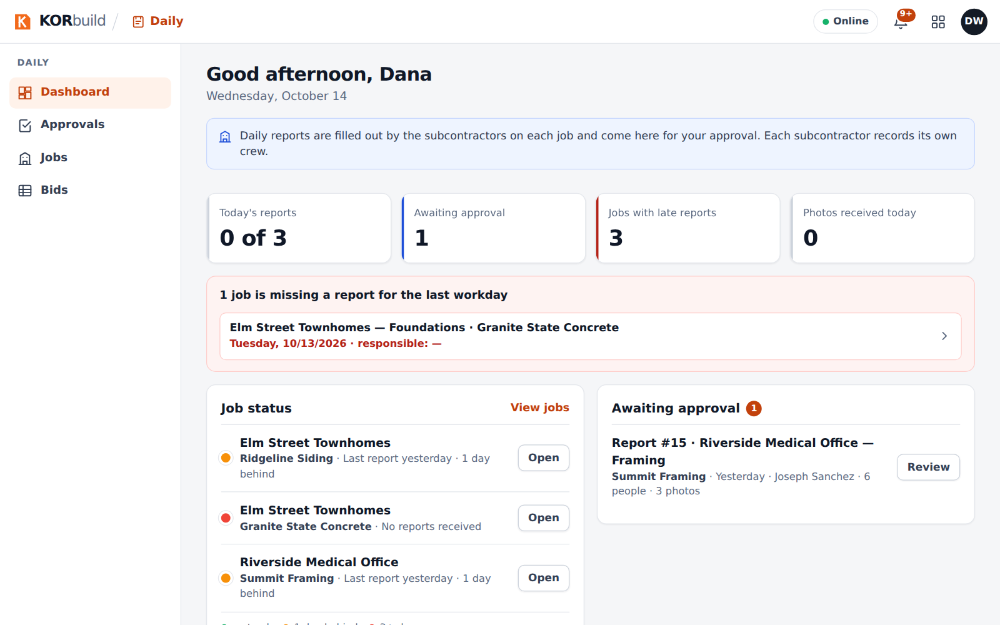
Reports from every subcontractor on the job land in Approvals.
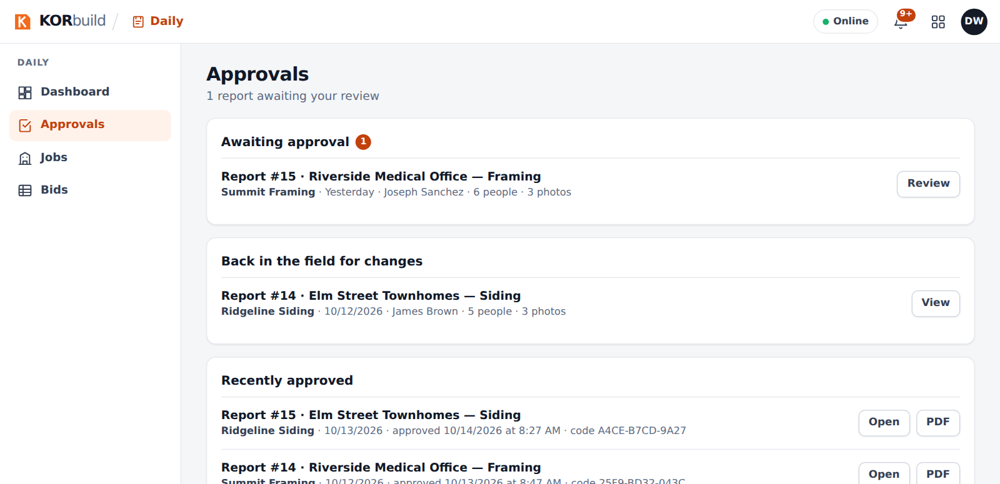
Opening a report shows the weather, the crew, the equipment, the work performed and the photo log. Each photo carries its time, GPS position and the fingerprint of the original file. Approving seals the report: it can no longer change.
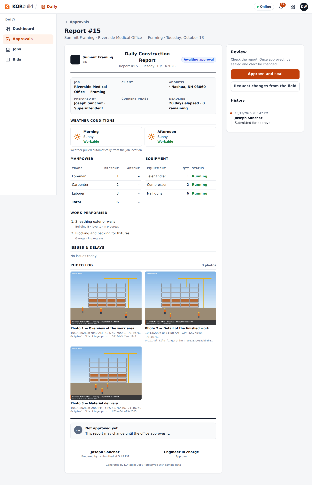
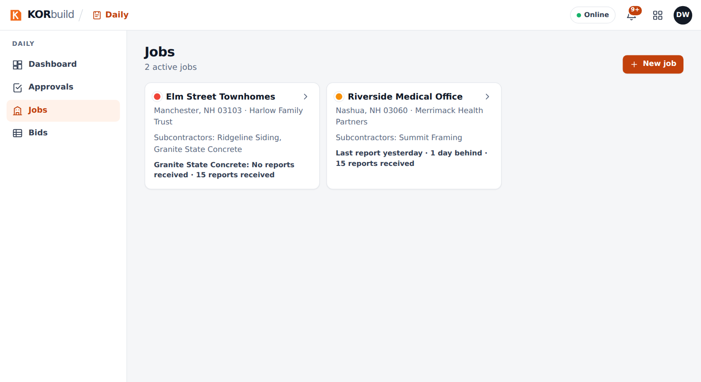
Bids between companies
A bid with two proposals, leveled by cost code. The lowest value of each line is in green and a cost code a company did not bid is never counted as zero.
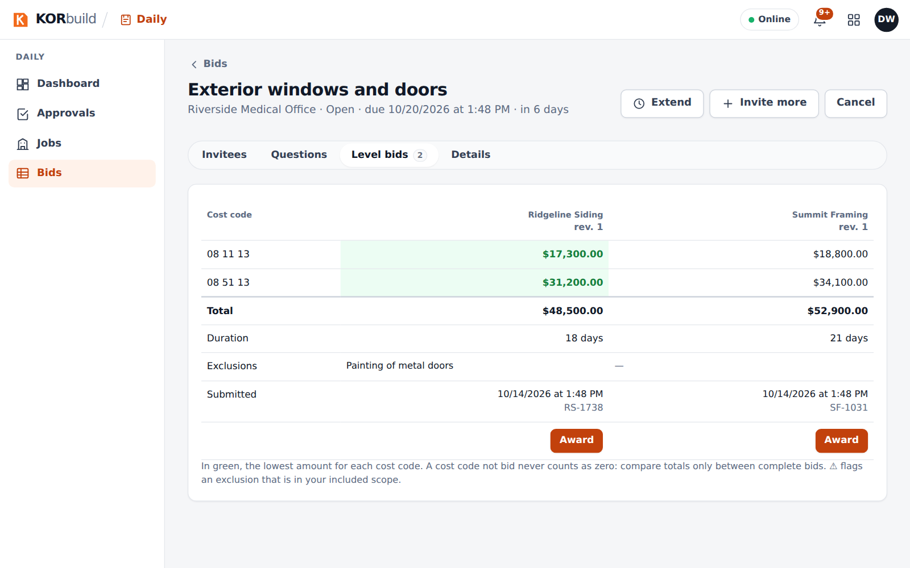
The subcontractor: Summit Framing
The schedule has four tasks, a baseline, a forecast finish and the version the general contractor sees. Progress comes from the approved daily reports.
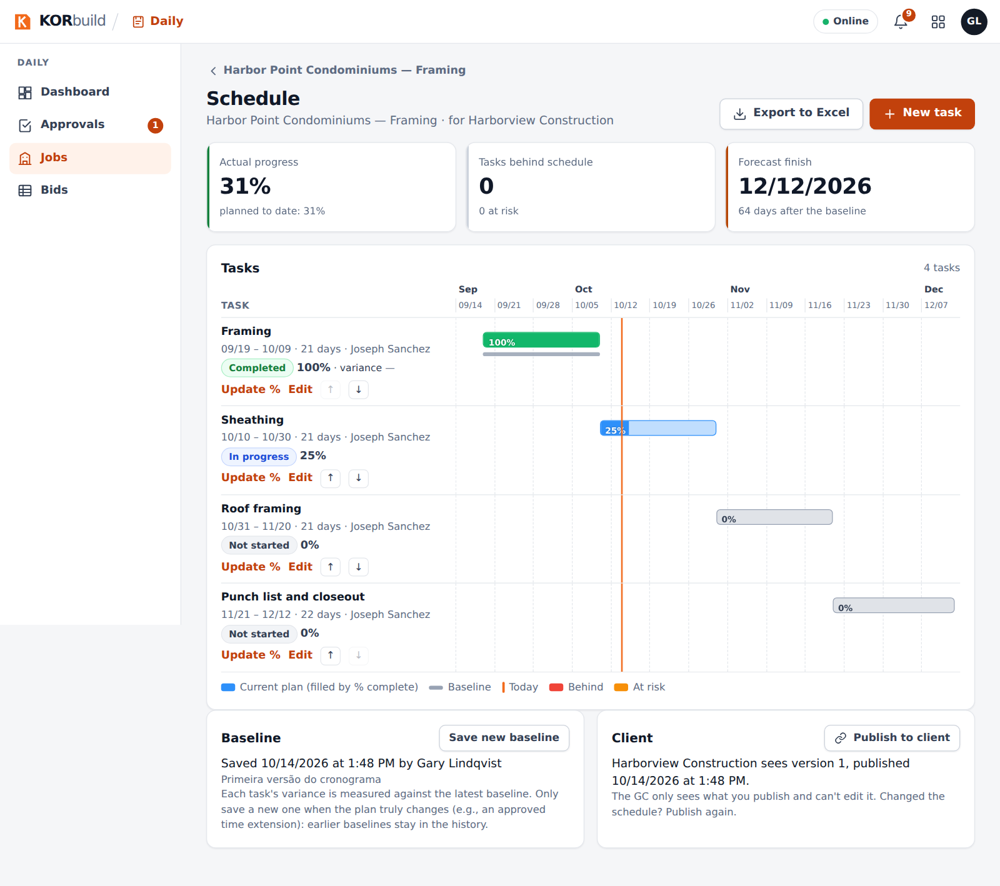
Crew shows who is working now and which punches fell outside the job's fence. Each office-review item has the day open in one click.
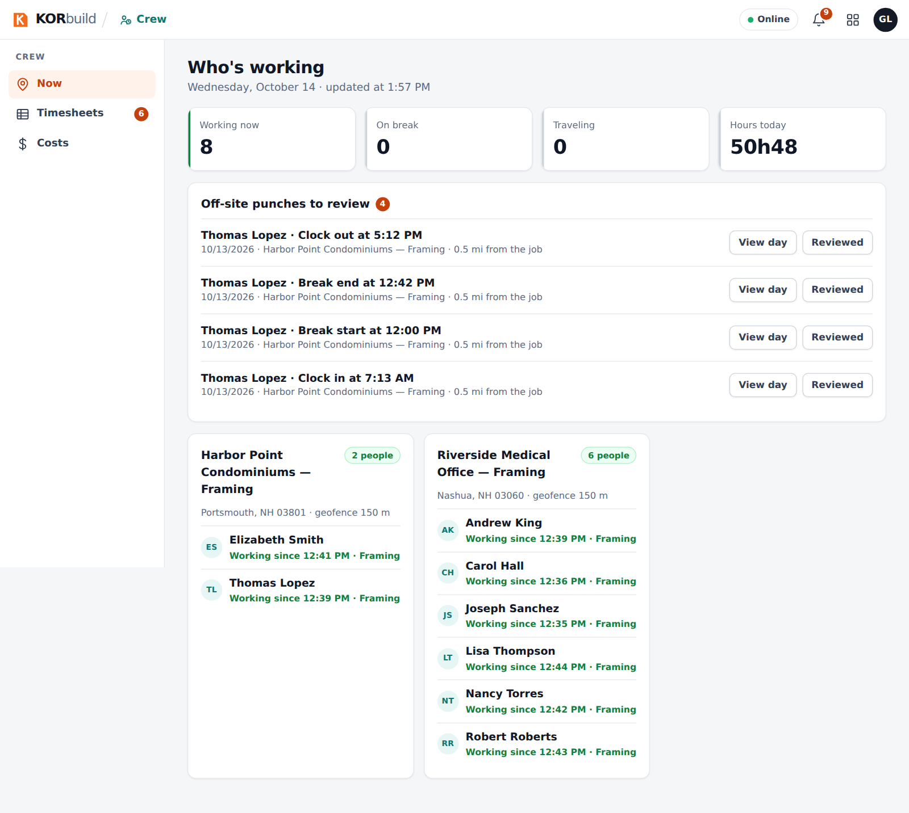
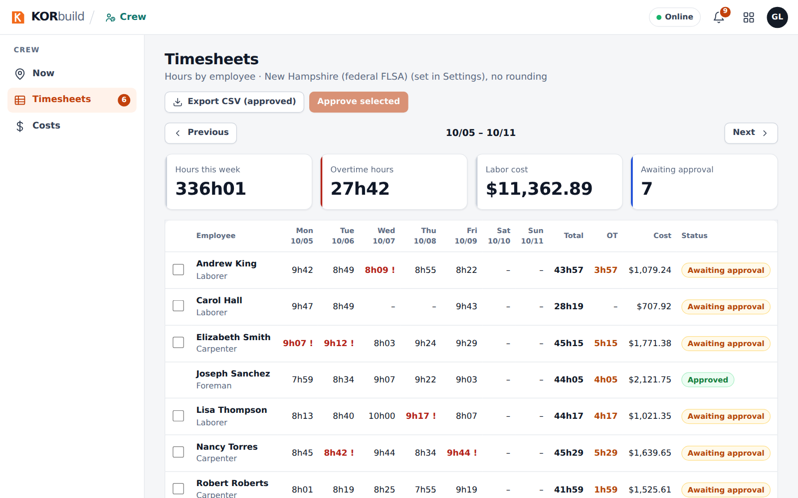
Measure
A subcontractor of a general contractor and an independent one, each with projects at different stages: estimating, proposal sent.
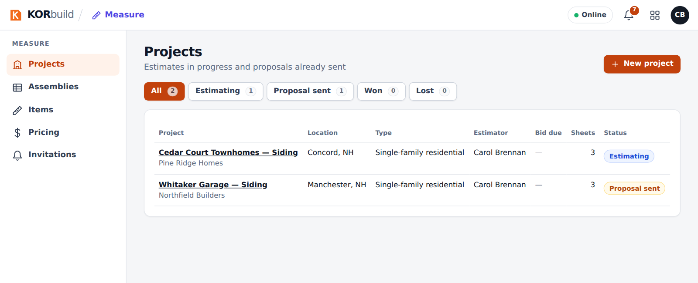
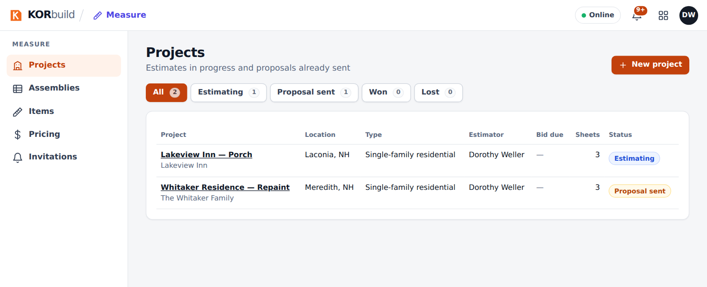
The KORbuild team view
In the platform administration the sample companies carry a Demo badge. The list also shows a company with an expired trial, one whose trial ends in 6 days and one that is suspended.
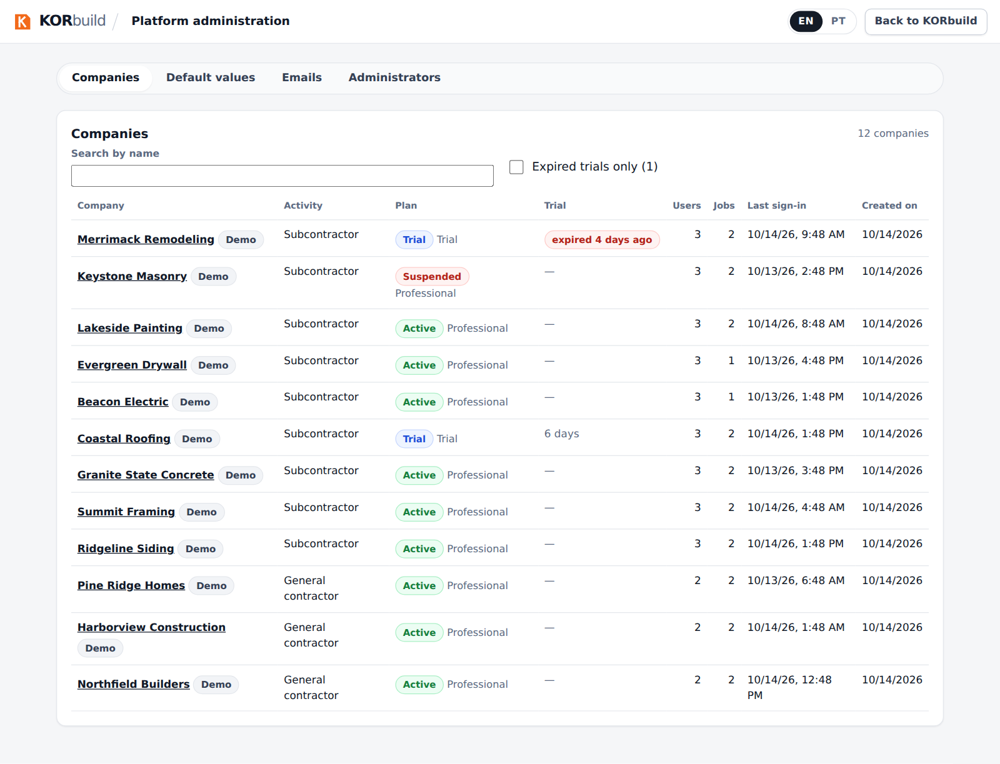
Signing in
Sample users follow the pattern demo.<company>.<role>@example.com. The password is shared with the team privately; it is never published here. See docs/massa-demo.md in the repository for the full list and how to load or remove the data.